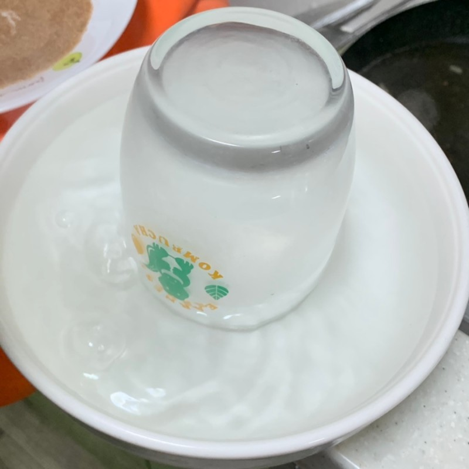

코젤다크시나몬
준비물 : 생크림, 설탕, 계피가루, 코젤맥주
1. 먼저, 생크림을 큰 그릇에 붓고 거품기로 열심히 저어줍니다. 설탕을 넣어 생크림의 단맛을 올려줍니다.
2. 계속 젓다보면 생크림이 사진처럼 뾰족해지면 생크림이 다 만들어졌다고 보면 됩니다.

3. 컵을 뜨거운 물에 담가줍니다. (입 닿는 부분이 물에 닿도록 해주시면 됩니다.)
4. 계피가루와 설탕을 섞어서 컵에 뭍혀주면 완성입니다.

5. 컵에 맥주를 넣고 생크림을 듬뿍 올리고 위에 계피가루를 살살 뿌리면 코젤다크시나몬이 완성됩니다.